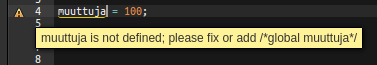

Node.js on palvelinpuolen JavaScript-alusta
Perustuu Googlen V8-JavaScript-moottoriin
Soveltuu hyvin aina pienistä protoista suuriin järjestelmiin saakka
Alustalla voi ajaa muitakin kuin weppisovelluksia, mutta keskitymme webbipuoleen
Node.js tarjoaa rajapinnat esimerkiksi tiedostojen käsittelyyn ja HTTP-toiminnallisuuteen
$ node hello.js
Hello World!$ node
> var x = 1 + 3;
> x * x
16Node.js:n mukana tulee paketinhallintatyökalu npm
npm:llä voi liittää Node.js-sovellukseensa moduuleja laajasta
valikoimasta
Esim. moduuli nimeltä express
npm install express --saverequire-funktiollavar express = require('express');{
"name": "esimerkki",
"description": "Esimerkkisovellus",
"version": "0.0.1",
"devDependencies": {
"mocha": "*"
},
"dependencies": {
"express": "*"
}
}Asentaa packages.json:issa määritellyt riippuvuudet:
npm installAsentaa uuden moduulin:
npm install MODUULIN_NIMIAsentaa uuden moduulin JA lisää sen package.json:iin riippuvuudeksi:
npm install MODUULIN_NIMI --savenpm asentaa automaattisesti moduulien riippuvuudet
npm-moduulit ovat tyypillisesti pieniä ja tekevät yhden
yksinkertaisen asian
Isommat moduulit käyttävät hyväkseen useita muita moduuleja
Asennetut moduulit riippuvuuksineen näkee komennolla npm list
$ npm list
esimerkki@0.0.1 /home/ubuntu/workspace
├─┬ express@4.13.3
│ ├─┬ accepts@1.2.13
│ │ ├─┬ mime-types@2.1.7
│ │ │ └── mime-db@1.19.0
│ │ └── negotiator@0.5.3
│ ├── array-flatten@1.1.1
│ ├── content-disposition@0.5.0
│ ├── content-type@1.0.1
│ ├── cookie@0.1.3
...require-funktiollavar express = require('express');var oma = require('./oma.js');
oma.jokuFunktio();Toisin kuin selaimen JavaScriptissa, Node.js:ssä muuttujat eivät suoraan näy tiedostosta toiseen
Muualla määritellyt muuttujat (funktiot, oliot, ym.) täytyy erikseen ottaa
käyttöön require-funktiolla
Ulospäin näkyvät muuttujat taas tallennetaan
module.exports tai exports-muuttujiin
hello.js
function tervehdi(nimi) {
console.log("Hello " + nimi);
}
module.exports = tervehdi;toinen.js
var he = require('./hello.js');
he("Anna");function eka() {}
exports.eka = eka;
exports.toka = 100;
exports.kolmas = {};function eka() {}
module.exports = {
eka: eka,
toka: 100,
kolmas: {}
};Yllä määritellyn moduulin käyttö:
var moduuli = require('./moduuli.js');
moduuli.eka();
var k = moduuli.toka;var-avainsanaa määritellyt muuttujat ovat globaaleja// Jos muuttujaa ei ole aiemmin määritelty,
// luodaan globaali muuttuja
muuttuja = 100;
Express.js on suosittu sovelluskehys web-sovellusten tekoon Node.js:llä
Siinä web-sovellus on helppo jakaa MVC-mallin (Mode-View-Controller) mukaisesti
Expressin asennus:
npm install express --saveUusin stabiili versio on Express 4, jota myös tässä käsitellään
Asennuksen jälkeen voidaan express ottaa käyttöön require:lla
var express = require('express');Luodaan Express-sovellus
var app = express();ja asetetaan sovellus kuuntelemaan HTTP-pyyntöjä:
// Kuunnellaan porttia 8080
app.listen(8080);Jotta Express-sovelluksemme tekisi jotain, täytyy määritellä miten se vastaa HTTP-pyyntöihin
Esim.
app.get('/hello', function(req, res) {
res.send("Hello World!");
});Nyt kun palvelimelle tulee HTTP GET -pyyntö osoitteeseen
http://palvelimemme.fi:8080/hello, reitittyy pyyntö yllä määritellylle funktiolle
Funktion parametrina saaman res-olion send-metodilla voidaan lähettää vastaus
app.METODI(POLKU, FUNKTIO);METODI = get, post, put, delete, ...
POLKU = URL:n polku johon pyyntö kohdistuu
FUNKTIO = funktio, joka saa parametrikseen:
var express = require('express');
var app = express();
app.get('/', function(req, res) {
res.redirect('/home');
});
app.get('/home', function(req, res) {
res.send("Moi!");
});
app.post('/home', function(req, res) {
teeJotain(function() {
res.send("Jotain tehtiin");
});
});
app.listen(8080);Express-sovellukseen voi liittää ns. middleware:ja
Middleware vastaanottaa pyynnön, tekee jotain ja välittää pyynnön eteenpäin käsiteltäväksi
Käytännössä middleware muokkaa req- ja res -olioita
Middlewareja voi tehdä itse sekä hakea npm:stä
Middlewaren voi ottaa käyttöön (mm.) Express-sovelluksen
use-metodilla
app.use(MIDDLEWARE);Esimerkiksi body-parser -middleware helpottaa HTTP-pyynnössä olevien
parametrien käsittelyä
Asennus:
npm install body-parser --savevar bodyParser = require('body-parser');
app.use(bodyParser.urlencoded({extended: true}));
app.get('/', function(req, res) {
// body-parser:n ansiosta HTTP-pyynnön parametrit
// ovat muuttujassa req.body
var nimi = req.body.nimi;
res.send("Moi " + nimi);
});Kaivetaan jälleen Plunkerissa oleva supersankarilomake esiin (jos se on hukkunut niin voi käyttää tätä)
Nyt voimme toteuttaa Node.js:n + Expressin avulla palvelinpään toteutuksen, joka vastaanottaa lomakkeen tiedot
Eli avaa Cloud9-workspacesi, ja...
body-parser middleware ja ota se käyttöönapp.post('/supersankari', ...) reitti, joka vastaa
lomakkeen lähetykseen jotainreq.body.nimi ja
req.body.supersankariAseta Plunkerissa olevan supersankarilomakkeen
action= -attribuutti osoittamaan Cloud9:ssä ajossa olevan
sovelluksesi polkuun /supersankari
Kokeile onnistuuko lomakkeen lähetys toivotusti
send-metodilla| Metodi | Selitys |
|---|---|
res.send(teksti) |
Lähettää annetun merkkijonon HTTP-vastauksen runkona |
res.json(olio) |
Lähettää annetun JavaScript-olion JSON-muotoisena datana |
res.render(sivupohja, muuttujat) |
Lähettää sivupohjan |
Expressissä (kuten lähes kaikissa muissakin web-frameworkeissa) voidaan käyttää sivupohjia (templates)
Sivupohjat ovat HTML- tai muita dokumentteja, joiden "puuttuvat osat" täydennetään dynaamisesti
Esim. ejs-sivupohja:
<div>
<p>Moi <%= nimi %></p>
</div>res.render('pohja', {nimi: "Anna"});Esim. EJS on yksinkertainen sivupohjakirjasto
See käsittelee HTML-dokumentteja, joissa voi olla kahdenlaisia erikoiselementtejä
Liitä JavaScript-muuttujan arvo dokumenttiin:
<%= muuttuja %>Suorita JavaScript-koodi
<% if (jotain) { %>
<p>Moi</p>
<% } %>ejs-kirjasto)npm install ejs --saveapp.set('view engine', 'ejs');app.set('views', './views');res.render('sivu', {nimi: "Annna"});./views/sivu.ejs
sivupohjanaSupersankari-backendimme ei ole vielä täydellinen. Nyt se vastaa pelkkänä tekstinä. Sivupohjan avulla voimme antaa vastauksen HTML-muodossa.
Luo Cloud9:ssä uusi hakemisto nimeltä views ja sen sisälle tiedosto index.ejs
Asenna ejs ja ota se käyttöön.
app.set('views', './views');
app.set('view engine', 'ejs');
app.get('/', function(req, res) {
res.render('index');
});Nyt juuriosoitteen / pitäisi palauttaa lomake, vaikka
EJS:n ominaisuuksia ei vielä olekaan käytössä. -->
Voimme käyttää samaa pohjaa index.ejs myös vastauksen esittämiseen,
kunhan lisäämme siihen vaikkapa tämänlaisen elementin:
<% if(locals.nimi) { %>
<p>Moi, <%= nimi %>! Suosikkisupersankarisi on siis
<%= supersankari %>. Selvä.</p>
<% } %>Nyt voimme vaihtaa lomakkeenlähetyksen käsittelyfunktion käyttämään sivupohjaa pelkän tekstin lähettämisen sijaan:
app.post('/supersankari', function(req, res) {
var nimi = req.body.nimi;
var supersankari = req.body.supersankari;
res.render('index', {nimi: nimi, supersankari: supersankari});
}Staattisia tiedostoja voi tarjoilla Expressin mukana tulevalla
express.static-middlewarella
Esim.
app.use(express.static('assets'));assets oleva tiedosto xxx.txt
on saatavilla URL-polussa /xxx.txt
Voit vaikkapa luoda hakemiston assets
ja sinne CSS-tiedoston style.css,
minkä jälkeen
<link rel="stylesheet" href="style.css">